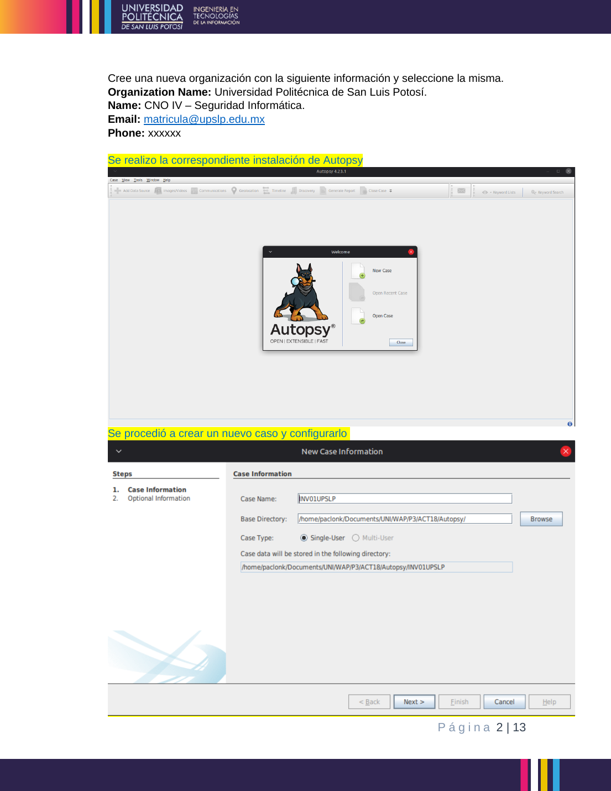
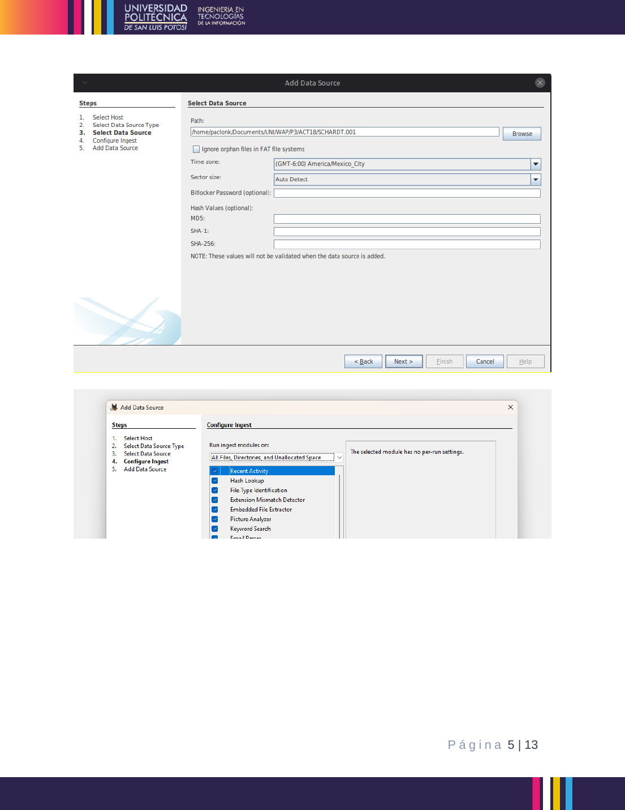
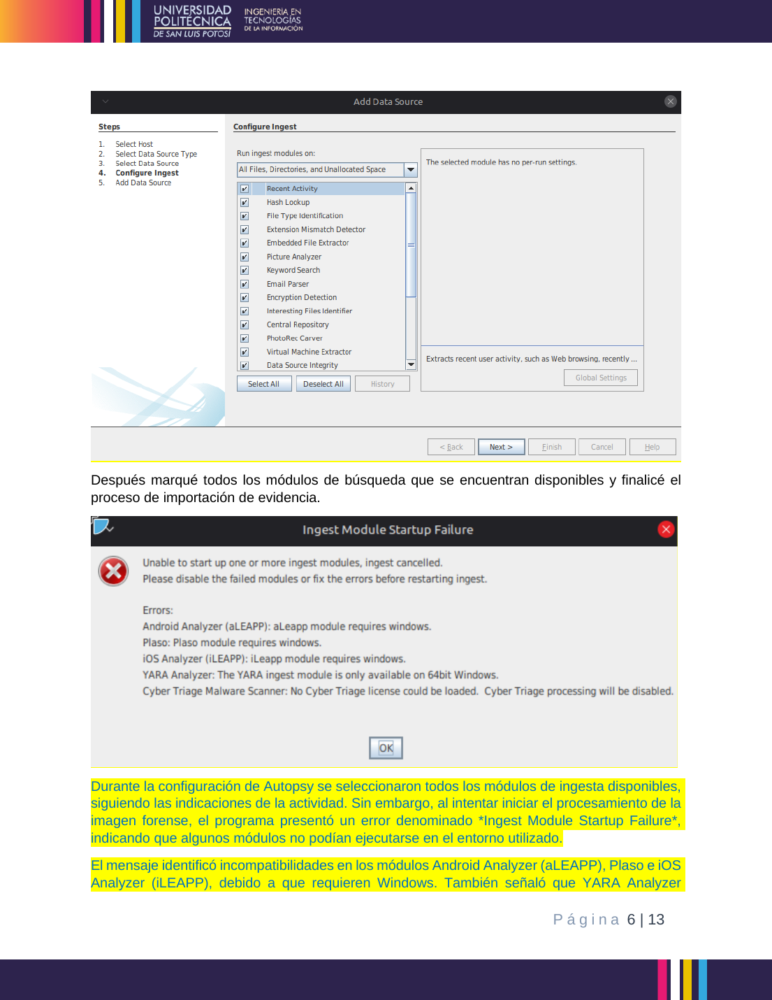
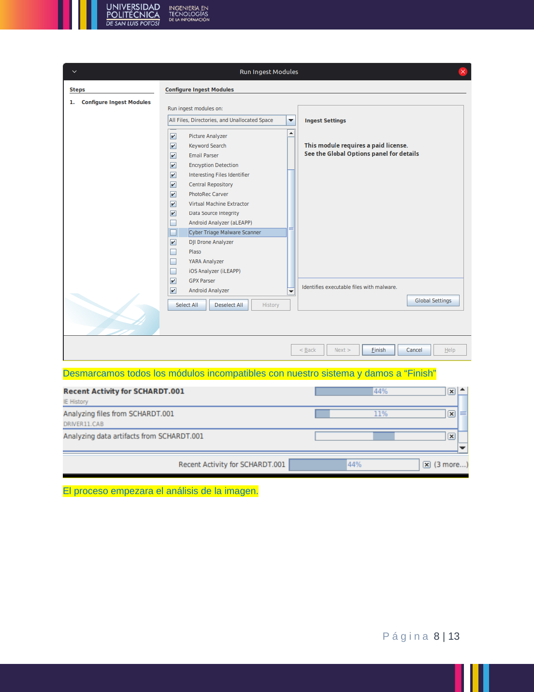
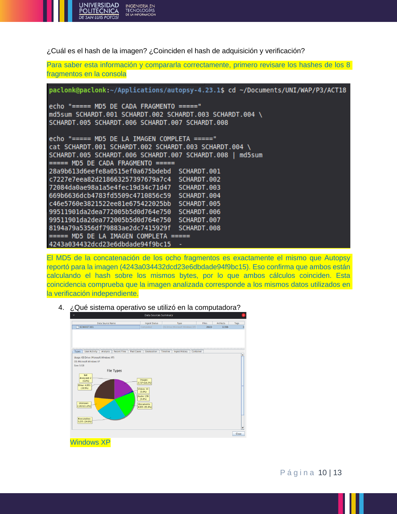
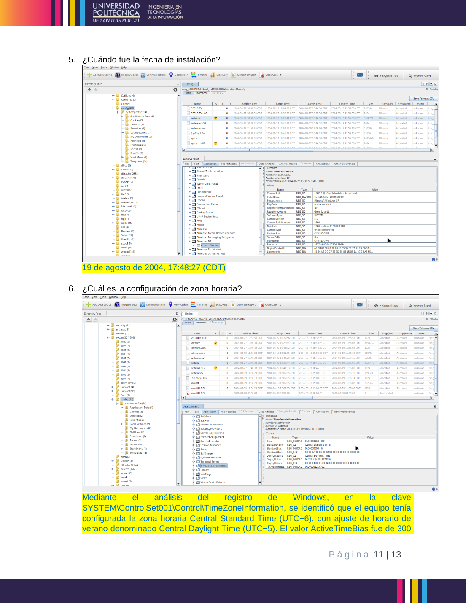
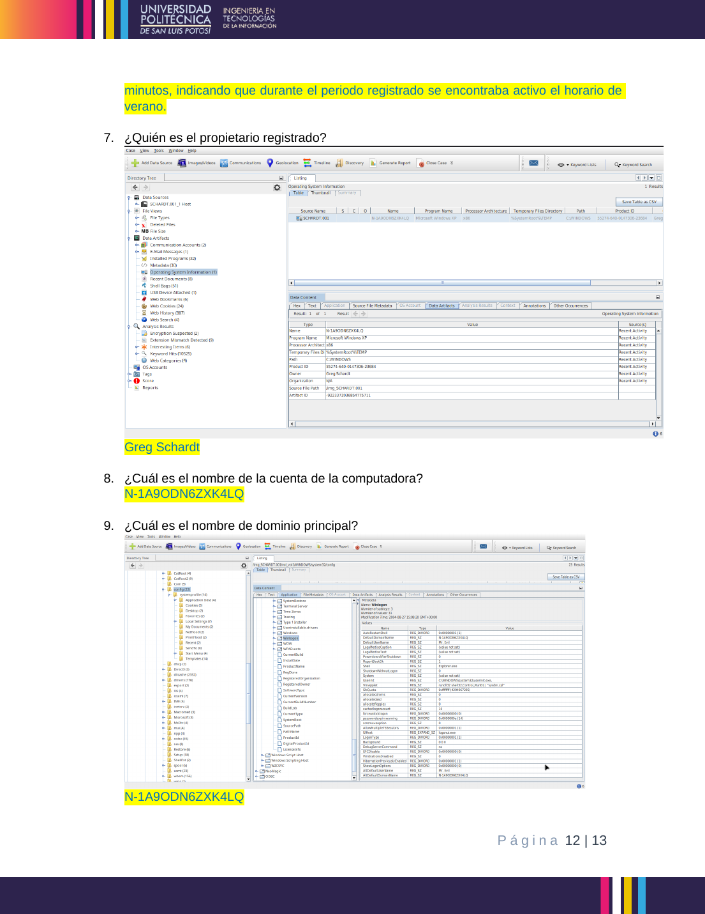
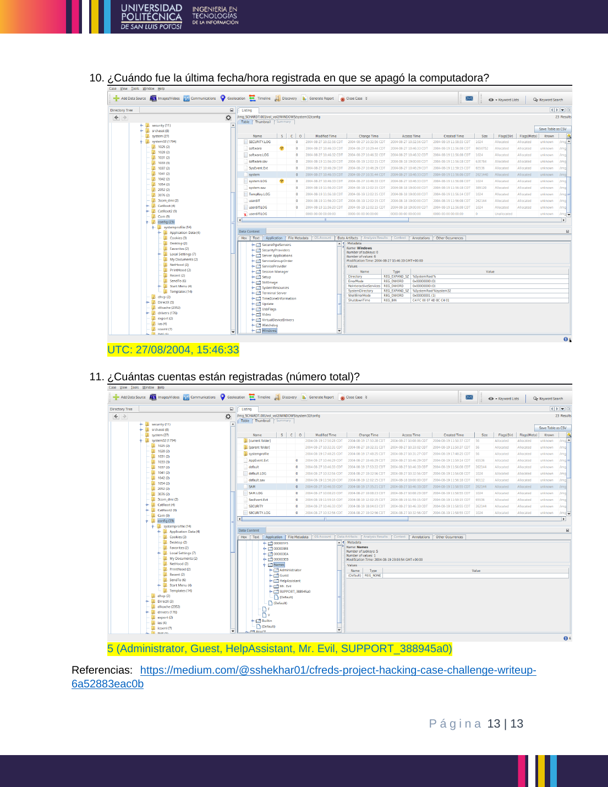

Equipo recuperado
El escenario describe una computadora portátil Dell CPi, número de serie VLQLW, encontrada el 20/09/2004 junto con una tarjeta inalámbrica PCMCIA y una antena externa 802.11b casera.
ACTIVITY 18 // LA HUELLA DIGITAL DE UN CIBERCRIMINAL
Análisis forense de la imagen de entrenamiento Hacking Case del proyecto NIST CFReDS. La práctica utiliza Autopsy para examinar una imagen de disco dividida en ocho segmentos, verificar su integridad y recuperar datos del sistema Windows XP y de su registro.
IMPLEMENTACIÓN: el análisis se realizó en Linux Mint 22.3 Xfce con Autopsy 4.23.1 y The Sleuth Kit 4.15.0. Los módulos que requerían Windows o una licencia comercial se excluyeron de la segunda ingesta; la fuente de datos permaneció incorporada al caso y el procesamiento compatible finalizó correctamente.
El escenario describe una computadora portátil Dell CPi, número de serie VLQLW, encontrada el 20/09/2004 junto con una tarjeta inalámbrica PCMCIA y una antena externa 802.11b casera.
La investigación considera un posible uso del equipo para interceptar tráfico en puntos de acceso inalámbricos y obtener información sensible. La hipótesis debe contrastarse con artefactos; no se toma como conclusión por sí sola.
La evidencia se proporcionó en ocho archivos consecutivos, desde SCHARDT.001 hasta SCHARDT.008, que Autopsy incorporó como una sola imagen RAW.
Crear el caso, añadir la imagen, verificar sus valores hash y consultar atributos del sistema y del registro para responder los incisos solicitados en la guía.
Se reunieron los ocho segmentos en una misma carpeta, conservando sus nombres originales. Se instaló Autopsy y se creó el caso INV01UPSLP con número 01 y la organización institucional indicada en la actividad.
Se seleccionó Generate new host name based on data source name y el tipo Disk Image or VM File. Como origen se indicó SCHARDT.001, con zona de interpretación America/Mexico_City y tamaño de sector automático.
El primer inicio informó módulos que requieren Windows y un módulo con licencia no disponible. Se conservó la fuente incorporada y se repitió la ingesta desactivando únicamente esos módulos; el procesamiento compatible terminó.
Se consultaron los artefactos de Operating System Information y los hives SOFTWARE, SYSTEM y SAM para recuperar la instalación, zona horaria, apagado, propietario, nombre de equipo, dominio predeterminado y cuentas.
4243a034432dcd23e6dbdade94f9bc152eea83d8f6356383b5cee7ca5e72917ce2f2eb0eEl MD5 de la concatenación independiente de los ocho segmentos coincidió con el MD5 reportado por Autopsy. Esta comprobación confirma que ambos cálculos utilizaron los mismos bytes; no sustituye un hash histórico tomado antes de la adquisición.
| INCISO | ATRIBUTO | RESULTADO OBTENIDO | FUENTE |
|---|---|---|---|
| 04 | Sistema operativo | Microsoft Windows XP · arquitectura x86 | Operating System Information |
| 05 | Fecha de instalación | 19/08/2004 · 17:48:27 CDT | SOFTWARE / CurrentVersion / InstallDate |
| 06 | Zona horaria | Central Standard Time UTC−6; horario de verano Central Daylight Time UTC−5 | SYSTEM / TimeZoneInformation |
| 07 | Propietario registrado | Greg Schardt | SOFTWARE / RegisteredOwner |
| 08 | Nombre del equipo | N-1A9ODN6ZXK4LQ; cuenta predeterminada Mr. Evil | Operating System Information / Winlogon |
| 09 | Dominio predeterminado | N-1A9ODN6ZXK4LQ (coincide con el nombre del equipo) | SOFTWARE / Winlogon / DefaultDomainName |
| 10 | Último apagado registrado | 27/08/2004 · 10:46:33 CDT (15:46:33 UTC) | SYSTEM / Windows / ShutdownTime |
| 11 | Cuentas locales | 5: Administrator, Guest, HelpAssistant, Mr. Evil y SUPPORT_388945a0 | SAM / Users / Names |
El valor DefaultDomainName es el nombre predeterminado usado por Winlogon y coincide con el nombre del equipo. El resultado no demuestra por sí solo la pertenencia a un dominio corporativo externo.
Android Analyzer (aLEAPP), Plaso e iOS Analyzer (iLEAPP) indicaron que requieren Windows. YARA Analyzer se mostró disponible únicamente en Windows de 64 bits.
Cyber Triage Malware Scanner no pudo cargar una licencia válida. Se excluyó de la segunda ingesta para poder continuar con los módulos compatibles.
Las limitaciones de módulos se documentaron como restricciones del entorno. Los resultados obtenidos permiten describir el sistema y sus artefactos, pero no prueban por sí solos la comisión de fraude ni atribuyen una actividad a una persona.

01 // CASE SETUP · PDF PAGE 02
02 // DATA SOURCE · PDF PAGE 05
03 // INGEST LIMITS · PDF PAGE 06
04 // INGEST RESTART · PDF PAGE 08
05 // HASH + OS · PDF PAGE 10
06 // INSTALL + TIMEZONE · PDF PAGE 11
07 // OWNER + DOMAIN · PDF PAGE 12
08 // SHUTDOWN + ACCOUNTS · PDF PAGE 13El informe PDF ya está incluido en el paquete. Los TXT o CSV adicionales que exportes desde Autopsy deben colocarse en la carpeta indicada; no se generan ni se simulan archivos que no hayan sido exportados.
P3/
└── Actividades/
├── Act18_HuellaDigital_Autopsy.html
├── actividad18.css
└── Evidencias18/
├── Reporte/
│ └── PuenteLunaBrunoAxel-ACT18.pdf
├── Capturas/
│ └── [capturas de las páginas del informe]
└── TXT/
└── [exportaciones .txt o .csv de Autopsy]
Ubicación para TXT: P3/Actividades/Evidencias18/TXT/. Ubicación del reporte: P3/Actividades/Evidencias18/Reporte/PuenteLunaBrunoAxel-ACT18.pdf.
Informe de investigación forense y resultados de Autopsy.
INSERTAR EN: P3/Actividades/Evidencias18/Reporte/PuenteLunaBrunoAxel-ACT18.pdfSi el visor no carga, utiliza OPEN // PDF.
El examen permitió identificar Windows XP, recuperar datos de instalación y configuración, reconocer la cuenta Mr. Evil y contabilizar cinco cuentas locales. La coincidencia del MD5 calculado por Autopsy con el cálculo independiente sobre los ocho segmentos respalda que ambos procedimientos procesaron el mismo conjunto de bytes.
El propietario registrado Greg Schardt y la cuenta Mr. Evil son atributos encontrados en el sistema, pero no demuestran por sí solos quién operó físicamente el equipo ni que se haya consumado el fraude descrito en el escenario. Las restricciones de módulos y los límites de ingesta se documentaron para mantener el alcance de las conclusiones.